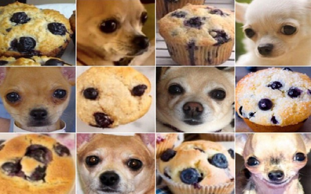
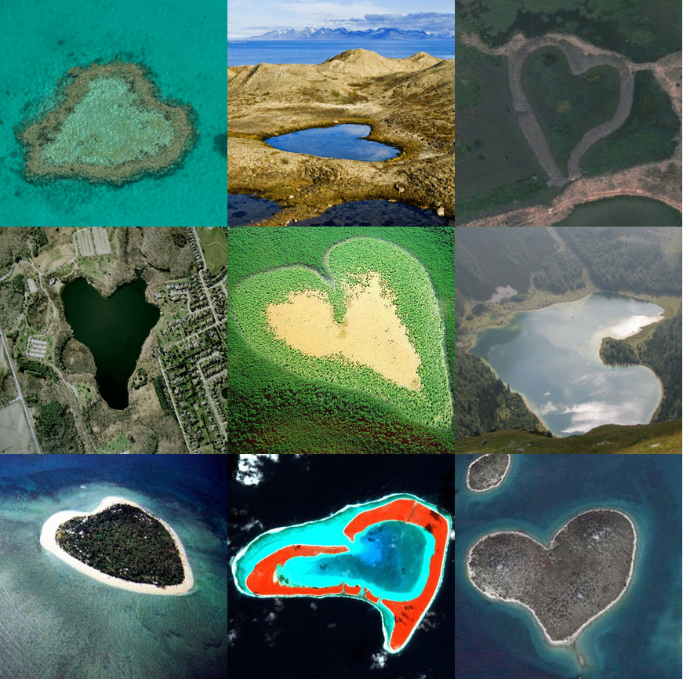
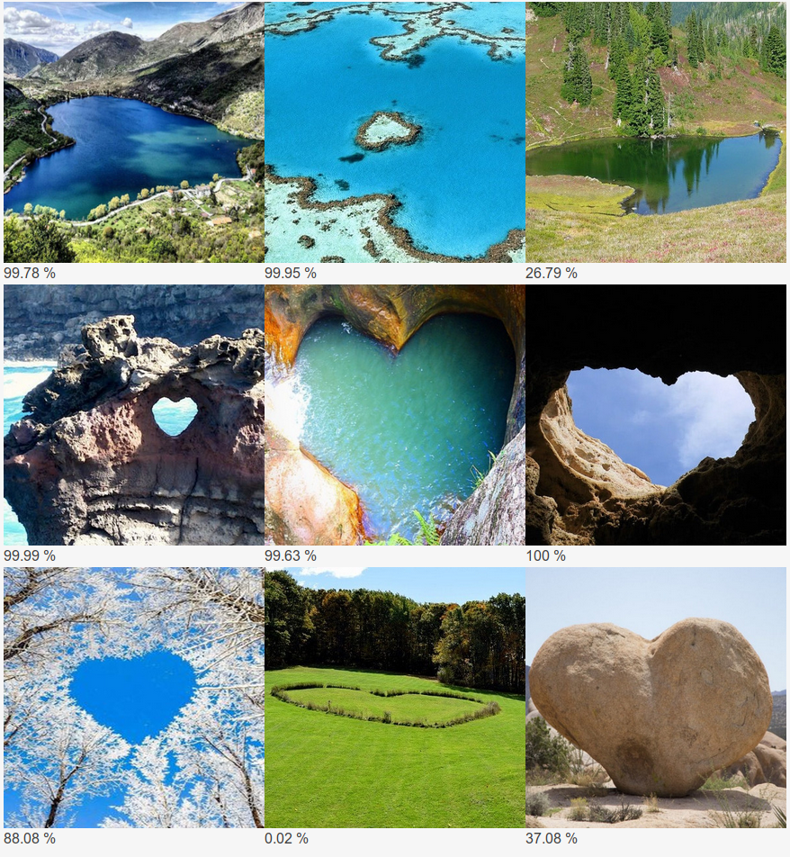
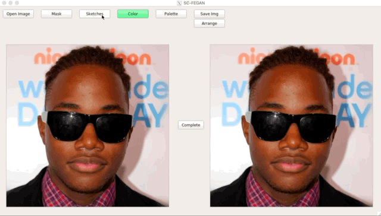
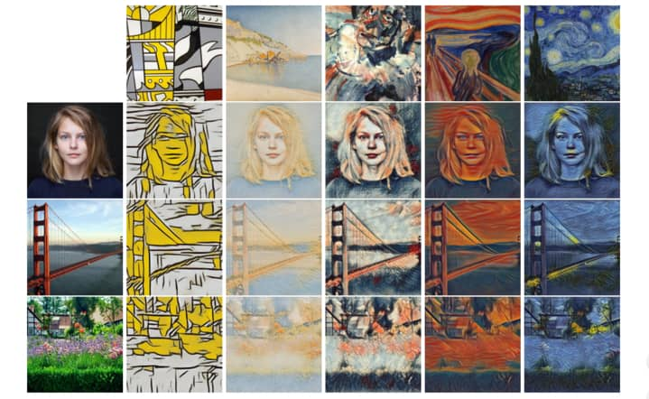
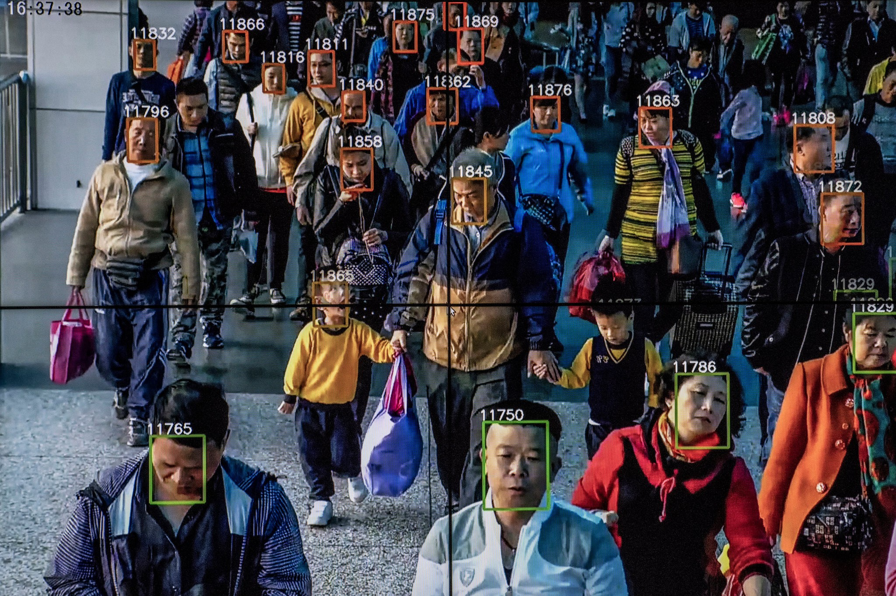
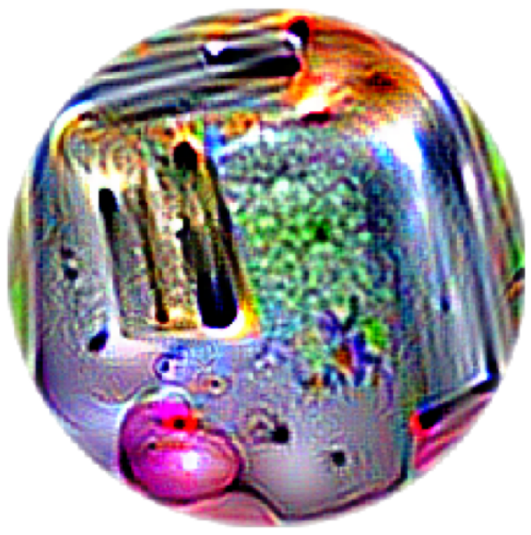
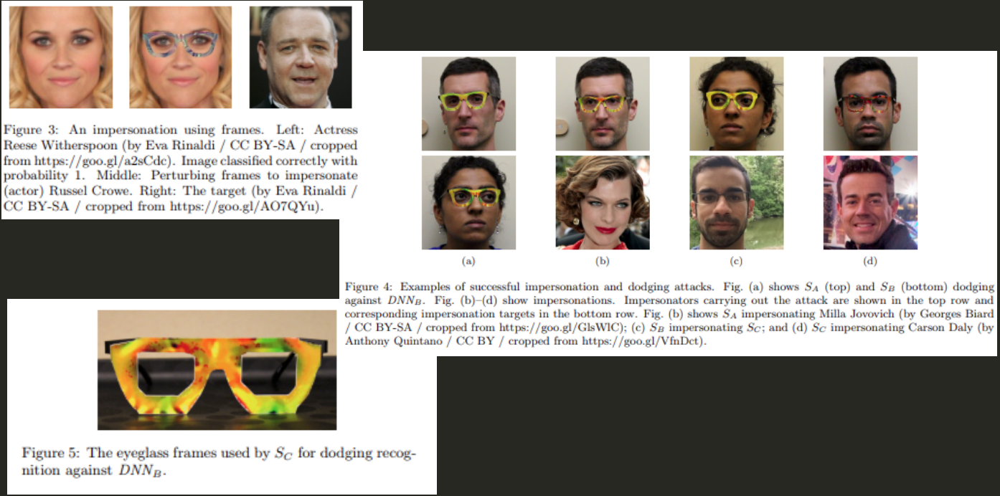
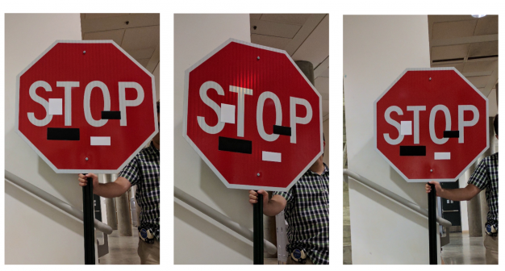

Introduction à l'intelligence artificielle

Qui suis-je ?
 Expert Drupal - SEO - IA
Expert Drupal - SEO - IA
L'IA selon la presse
Ce qu'on va voir
Le vocabulaire, les principes (la partie pénible)
Des exemples concrets (la partie fun)
Les enjeux (la partie qui fait peur)
Oubliez ce que vous avez vu dans les jeux
Counter Strike, 0.A.D.…
Une vraie IA décide de ses actions
Ce qui est maîtrisé
Le machine learning (apprentissage automatique)
± des statistiques
L'apprentissage supervisé
On apprend de ce qui existe
L'apprentissage non supervisé
On ne sait rien
Ce qui est à la mode
Les réseaux de neurones
Pour les traitements plus complexes
À quoi ça ressemble ?

Pour les jeux
Apprentissage par renforcement
Concrètement : exemple de code
X = data
y = classes
algo = cluster.DBSCAN()
algo.fit(X, y)
algo.predict(X)
Et pour un réseau de neurones
model = Sequential()
model.add(Couche())
model.add(Couche())
model.add(Couche())
model.compile()
model.fit(X, y)
Le plus dur…
Ce n'est pas d'en faire…
C'est de comprendre ce qu'on fait
Exemples d'application
Reconnaissance de formes

Pourquoi ?
l'IA ne reconnait que ce qu'elle a appris
Il n'y a jamais de certitudes
(IBM et le sénat américain)
Toujours vérifier ce qu'on fait (ex. des radios)
Reconnaissance de formes
Reconnaissance de formes
Génération d'images
Génération d'images

Algorihtmes génétiques
Jeux vidéo
Génération de vidéos
Art / Transfert de style
Art Augmenté par Intelligence Artificielle
Transfert de style
Reconnaissance de vidéos
Les impacts sociaux
Reproduction des schémas
Biais raciaux
Biais sexistes (Amazon)
Censure automatique
La fiction
La réalité
Les attaques sont possibles…
Le monde est un grille-pain
Transformer les images

Transformer les images

Voir toute la présentation de @TiffanySouterre au DevFestToulouse
Les voitures autonomes
Camouflage : le projet CV Dazzle

Essentiellement du maquillage
Toujours plus loin…
Mais la Chine peut déjà identifer les gens sur leur façon de marcher…
Des ressources pour aller plus loin ?
- Machine Learning is fun !, une série d'articles
- L'état de l'art du traitement d'images